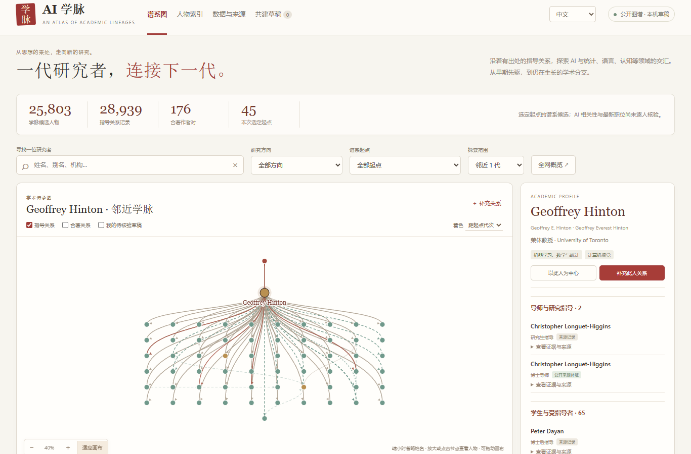
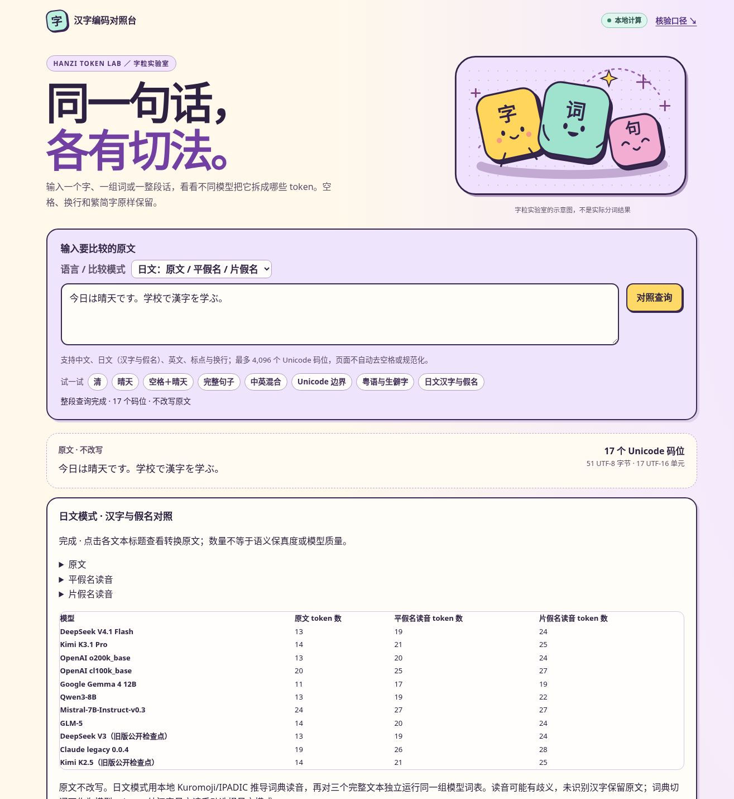

Project snapshots · 项目快照
Dated captures of three interactive projects. Screenshots and live demos may show different versions.

AI Academic Lineages · AI 学脉
An evidence-linked candidate network of over 25,000 researchers across eight broad fields, with bilingual name search and separate mentorship and coauthorship links. Coverage is incomplete; contribution drafts stay in your browser.
从公开来源整理逾 25,000 位研究者的候选网络，支持八大研究方向筛选、中英文姓名搜索，并区分师承与合著关系。收录仍在完善，补充资料的草稿仅保存在当前浏览器中。
Snapshot 2026-11-18
Live demo GitHub Frozen snapshot

Hanzi Token Lab · 多语言 Token 对照台
The updated interface compares token counts, IDs, and byte sequences with 11 local tokenizers, including a Japanese reading comparison.
新版「字粒实验室」用 11 套离线词表对照切分；日文模式分别比较原文、平假名和片假名。
New interface screenshot 2026-11-15 UTC
Earlier public demo GitHub Earlier snapshot
Quyi Genealogy · 相声与梨园谱系
Explore Xiangsheng and Jingju-centered lineages through searchable people, source-linked relationships and interactive genealogy and network views.
整理师承、亲缘与团体资料，支持人物查询、关系筛选和多种图谱视图；保留出处与存疑标注。
Snapshot 2026-11-14 · 75a27de
Live demo GitHub Frozen snapshot